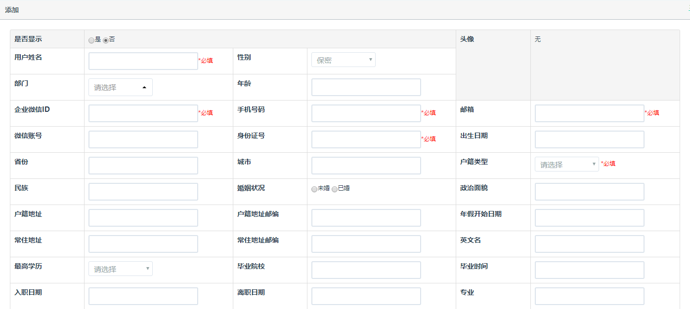

从功能菜单用户管理→用户组→企业部门菜单，在企业部门列表中已有常用部门，如需要添加则在添加部门中添加企业部门信息，填写完成点击添加。
企业部门菜单→添加企业部门，部门名称为必填项；排序填写数字或点击箭头选择；部门经理若弹框显示的列表中没有，可在弹框中输入姓名；备注可添加部门介绍等相关内容。
企业部门菜单→企业部门列表，找到需要修改的部门，在操作中选择修改，勾选部门抄送人及工作量抄送人，被勾选的人员会收到相关的消息推送。
企业部门菜单→企业部门列表，在搜索框中输入部门名称进行查询。
企业部门菜单→企业部门列表，找到需要删除的部门，在操作中选择删除。
从功能菜单用户管理→用户组→企业职位菜单，企业职位列表中已有常用职位，如需要添加则在添加职位中添加企业职位信息，填写完成点击添加。
企业职位菜单→添加职位，职位名称为必填项；排序填写数字或点击箭头选择；备注可添加职位介绍等相关内容。
企业职位菜单→企业职位列表，找到需要修改的职位，在操作中选择修改。
企业职位菜单→企业职位列表，在搜索框中输入职位名称进行查询。
企业职位菜单→企业职位列表，找到需要删除的职位，在操作中选择删除。
从功能菜单用户管理→用户组→企业员工菜单，在添加员工中添加企业人员信息，*为必填项，填写完成点击添加。
| 序号 | 名称 | 说明 |
| 1 | 用户姓名 | 员工姓名，为必填项。 |
| 2 | 性别 | 有男、女及保密三种性别类型。 |
| 3 | 部门 | 员工所属部门，如无员工所属部门，可在用户组-企业部门中添加部门后再选择。 |
| 4 | 年龄 | 员工年龄，与出生日期一致。 |
| 5 | 企业微信ID | 员工企业微信ID，为必填项。 |
| 6 | 手机号码 | 员工手机号码，为必填项。 |
| 7 | 邮箱 | 员工邮箱地址，一般填写工作邮箱，会收到系统推送邮件，为必填项。 |
| 8 | 微信账号 | 员工微信账号。 |
| 9 | 身份证号 | 员工身份证号，为必填项。 |
| 10 | 出生日期 | 员工出生日期，与年龄一致。 |
| 11 | 省份 | 员工户籍所在省份。 |
| 12 | 城市 | 员工户籍所在城市。 |
| 13 | 户籍类型 | 有城镇及非城镇两种户籍类型，为必填项。 |
| 14 | 民族 | 员工民族。 |
| 15 | 婚姻状况 | 有未婚及已婚种婚姻状况。 |
| 16 | 政治面貌 | 员工政治面貌。 |
| 17 | 户籍地址 | 员工户籍地址。 |
| 18 | 户籍地址邮编 | 员工户籍地址邮编。 |
| 19 | 年假开始日期 | 从日历中选择年假开始日期。 |
| 20 | 常住地址 | 员工常住地址。 |
| 21 | 常住地址邮编 | 员工常住地址邮编 |
| 22 | 英文名 | 员工英文名。 |
| 23 | 最高学历 | 有研究生及以上、本科、专科及高中及以下四种学历类型。 |
| 24 | 毕业院校 | 员工毕业院校。 |
| 25 | 毕业时间 | 从日历中选择毕业时间。 |
| 26 | 入职日期 | 从日历中选择入职日期。 |
| 27 | 离职日期 | 从日历中选择离职日期。 |
| 28 | 专业 | 员工所学专业。 |
| 29 | 员工状态 | 有在职、试用、实习、兼职及离职五种状态类型，为必填项。 |
| 30 | 试用期限 | 员工使用期限，根据劳动合同填写。 |
| 31 | 试用期截止 | 从日历中选择试用期截止日期。 |
| 32 | 职位 | 员工职位，如无员工相关职位，可在用户组-企业职位中添加职位后再选择。 |
| 33 | 权限角色 | 员工权限，如无员工相关权限角色，可在用户组-微信权限管理中添加角色后再选择。 |
| 34 | 工资 | 员工工资金额。 |
| 35 | 备注 | 需要记录的内容在列表中没有选项可在备注中记录。 |
企业员工菜单→添加员工，用户姓名、企业微信ID、手机号码、邮箱、身份证号码、户籍类型及员工状态为必填项，其他内容为选填项。
企业职位菜单→企业员工列表，找到需要修改信息的员工姓名，在操作中选择修改。
企业职位菜单→企业员工列表，在搜索框中输入员工姓名或选择性别、员工状态及部门进行查询。默认不显示离职员工名单，如需查看可在显示离职员工中勾选是，企业员工列表中会显示已离职的员工名单。
企业职位菜单→企业员工列表，找到需要删除的员工姓名，在操作中选择删除。